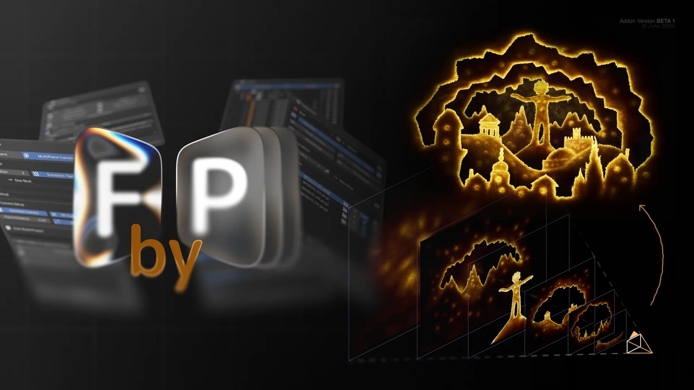

Frame By Plane 7.2：Blender 5.2 的 2.5D／Cutout／Multiplane Production 工具大更新
Frame By Plane 7.2 強化 Grease Pencil 雙色、相機格式、timeline、effects 與 safer import/render，並支援 layered image、cutout、parallax 與 2.5D 場景管理。

外掛 ★★★★★
完整分析
DCC 工作流
把 image sequence、cutout、layer tree、multiplane camera、parallax、mask 與 shader/GN effects 做成 Blender 內一致工作流。
Production 價值
對固定視角 2.5D 場景與分層貼片特別有價值，可降低 Photoshop/After Effects/Blender 間反覆整理 layer 的成本。
導入測試
用一個近中遠三層遊戲場景測 folder import、camera fit、parallax、alpha cutout、效果 stack 與輸出穩定性。